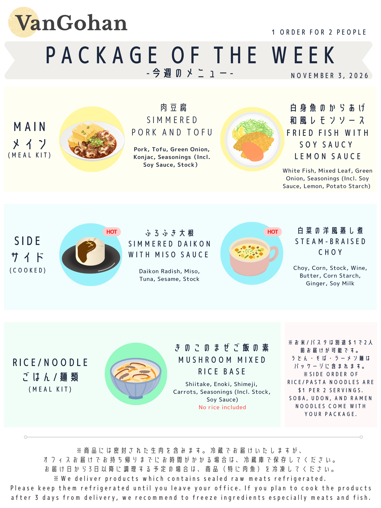

VanGohan Recipe: Week of 2026-11-09
親子丼
- Ingredients are marked with Orange Stickers 🥣
- Cooking time: 15-25 mins
ご自宅でご用意いただくもの
- 炊いたご飯
- 50mlの水
- 卵2〜4個 （卵の量はお好みで調整して下さい）
インストラクション
- 鍋にSeasoning①と水50mlを入れて強火にかけ、煮立ったら鶏肉を加えて灰汁を取り除きながら中火で3−4分煮る
- 野菜を加えて再び煮立ったら2分煮る
- 別の容器に溶き卵を作り鍋に回し入れ、半熟になったら火を止める
- 丼鉢によそったご飯の上にのせて完成
- 鶏肉はしっかり火が通っているか確認してください
アラビアータソース
- Ingredients are marked with Yellow Stickers 🥣
- Cooking time: 10-15 mins
ご自宅でご用意いただくもの
インストラクション
- お湯に塩を入れてパスタを茹でる
- フライパンでソースを加熱し、茹でたパスタを絡めて出来上がり
トンテキ
- Ingredients are marked with Blue stickers 🥣
- Cooking time: 25-40mins
ご自宅でご用意いただくもの
インストラクション
- フォークで豚肉の表面を刺す
- 豚肉に塩こしょうをして、Seasoning②をまぶす
- 油を引き、中火でよく熱したフライパンで焼き色がつくまで両面を焼く。
- 弱火にしてしっかりと中まで火を通し、端でポテトを焼くかレンジで火を通す。
- Seasoning⑤を入れてポテトも一緒にからめる
- 付合わせの野菜と一緒に盛り付ける
